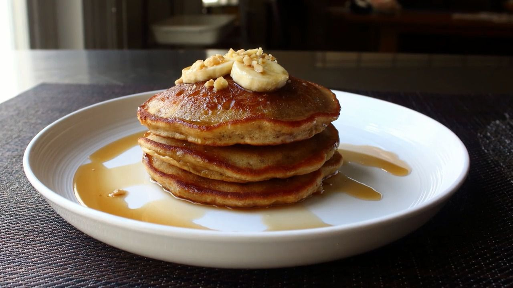

Back to Home
Banana Bread Pancakes

Description
If you're a fan of our banana bread, then you're gonna love this, since it's based on that recipe. As easy
as that
is to make, these are even easier. I really think that this threads the needle between something that has the flavor
of banana bread, but that is very close to the texture of a classic pancake. Top with butter and banana slices and
serve with warm maple syrup.
Anyway, whether you enjoy these tricked-up for dessert or as-is for breakfast, I really do hope
you give these a
try soon. Enjoy!
Ingredients
-
1 ¼
cups all-purpose
flour
-
½
teaspoon kosher salt
-
½
teaspoon baking powder
-
1 ¼
teaspoon baking soda
-
1
large ripe banana
-
1 large egg
-
⅓
cup white sugar
-
¼
cup milk
-
¼ teaspoon vanilla extract
-
¼
cup unsalted butter, melted
-
½ cup finely chopped walnuts
-
1 tablespoon unsalted butter, or as needed
How to Make Lasagna Step-By-Step
- Steps 1:
- Combine flour, salt, baking powder, and baking soda in a small bowl with a whisk. Reserve until needed.
- Step 2:
- Place banana in a mixing bowl and mash into a smooth paste with a potato masher. Add egg
and
sugar and whisk
thoroughly until sugar is dissolved and mixture is smooth and creamy, about 2 minutes. Add
milk, vanilla
extract,
¼ cup melted butter, walnuts, and flour mixture. Whisk until just combined.
- Step 3:
- Let batter rest for 10 minutes.
- Step 4:
- Melt 1 tablespoon butter in a large, nonstick pan or skillet over medium-high heat. Once
the pan is hot,
transfer in about ⅓ cup of the batter per pancake. Reduce heat to medium and cook until
edges start to look
dry
and small air bubbles pop up through the surface, about 3 minutes. Flip and cook until
golden
brown, about 3
minutes more. Serve immediately.
While an almost-black banana is recommended here, as long as your banana is fully ripe, and you're able to
mash it
fairly smooth, it should still work for this recipe.
If you want these a little more decadent, sprinkle on a little chopped dark chocolate before you flip the
pancakes —
which, of course, is the secret ingredient in our famous banana bread recipe.
Enjoy!